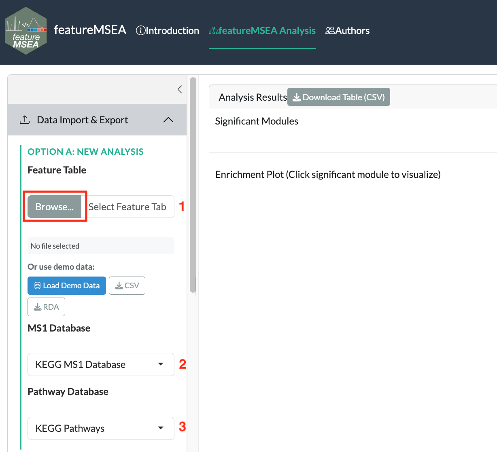
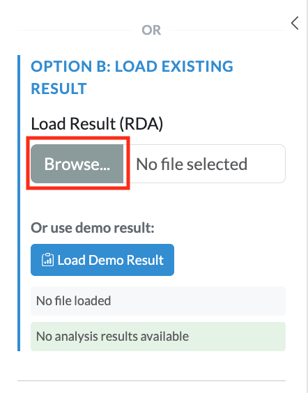

1 Summary of Inputs
featureMSEA requires three inputs: a feature table from your LC-MS experiment, an MS1 metabolite database for annotation, and a metabolite set database for enrichment testing.
1.1 Feature Table
The feature table is the primary input and can be provided as either an .rda file (containing a data frame) or a .csv file. Each row represents one metabolic feature detected in your LC-MS experiment. The following columns are required:
| Column | Type | Description |
|---|---|---|
variable_id |
character | Unique identifier for each metabolic feature |
mz |
numeric | Measured mass-to-charge ratio (m/z) |
rt |
numeric | Retention time in seconds |
condition |
numeric | Phenotype-associated ranking statistic — use the absolute value of an effect-size measure such as signal-to-noise ratio (|SNR|), fold-change (|log₂FC|), or correlation coefficient (|r|) |
polarity |
character | Ion mode: "positive" or "negative"
|
mean_intensity |
numeric | Average feature intensity across all samples |
Note on
condition: featureMSEA ranks features in descending order by theconditionvalue before running enrichment, such that features with larger values are ranked higher and contribute more strongly to the enrichment score. Theconditioncolumn should contain the absolute value of a phenotype-associated statistic, such as |SNR|, |log₂FC|, or |correlation coefficient|. Because magnitude-based ranking is used, featureMSEA identifies metabolite sets that are collectively dysregulated, without distinguishing between directionally up- or down-regulated signals.
1.2 Reference Databases
Two reference databases are required.
MS1 metabolite database — used for accurate-mass-based feature annotation (m/z matching). Supported options:
- KEGG
- HMDB
Metabolite set database — defines the sets of metabolites tested for enrichment. Supported options:
| Database | Description |
|---|---|
| KEGG | Metabolic pathways from the Kyoto Encyclopedia of Genes and Genomes |
| PathBank | Small molecule pathways with detailed biochemical context |
| WikiPathways | Community-curated biological pathways |
| Reactome | Manually curated human biological reactions and pathways |
| iMetPD | Integrated metabolite pathway database compiled from multiple sources |
1.3 Uploading Data
In the Data Upload panel, upload your feature table (.rda or .csv). The MS1 metabolite database and metabolite set database are not uploaded — select them from the dropdown options provided on the website.

Figure 1.1: Data upload panel: upload the feature table and select the reference databases
If you have already completed a previous featureMSEA run, you can upload the saved fmsea_result.rda directly. This skips annotation and enrichment entirely and loads the prior results straight into the visualization panel.

Figure 1.2: Uploading a previously saved result to resume from the visualization step